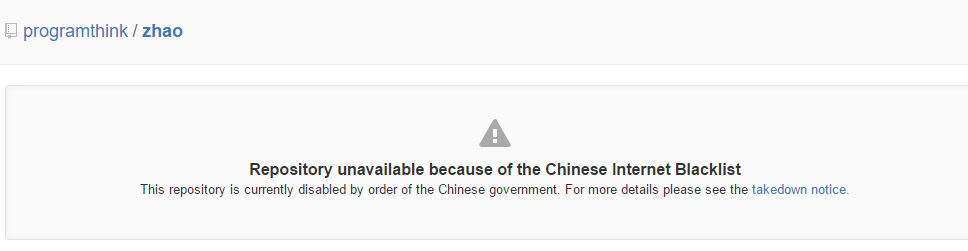

GitHub的妥协：government takedown on programthink / zhao事件随想
文章目录
前言
这事已经过去一个星期了，按理说，我现在写文章来说这事似乎有点过气。怎奈事务繁多，除去写了封抗议信，都在忙着别的事，所以今天在此补上。
在编辑这篇文章的时候，我突然意识到，当初“可能吧”就是因为发表了声援Google退出中国的文章而被屏蔽至今，Jason Ng多次被请喝茶。如果因为这gov takedown这事我能够获得同样的荣誉，那到时候我一定要发表一篇获奖感言。
事件回顾
话说网上有个很有名的人叫编程随想，他将今年自己整理的《太子党关系网络》开源到 GitHub 上。最近却被"中国政府"的一项删除命令给"删除"了，更准确的说是选择性屏蔽——中国IP将会显示gov takedown信息，而海外IP则不会。
这事可火了，来看看那些西方主流媒体的报道
http://qz.com/718465/chinas-fierce-censors-try-a-new-tactic-with-github-asking-nicely/
顺便提一句，这不好GitHub第一次takedown，前几次都是俄罗斯——真不愧是中俄好基友
好吧，有必要啰嗦一番，口诛笔伐GitHub和某gov了。下面就请大家跟着我来看看GitHub和中国政府的爱恨情仇。

GitHub和中国的较量
GitHub和中国政府一直以来都不太和谐，在这短短的几年里，从2013年开始，有过多次大规模冲突。下面就让我们回顾下。
1.第一次封锁
起因
某个程序员在 GitHub 上建立了一个项目（你戳我试试），利用 Python 脚本来定位 GFW 的物理部署位置。
经过
2013年1月20日，GFW利用域名污染和关键词过滤等手段封锁GitHub李开复在新浪微博进行抗议。
结果
政府迫于压力解除封锁。此次可称为"李开复救火"。GitHub胜出
2.中间人攻击
起因
某网友（大概也是程序员）在 GitHub 上建了个页面，列举那些替 GFW 卖命的技术人员。同时还在美国白宫官网发起一个请愿，呼吁美国政府禁止这些人入境美国。
经过
2013年1月26日，有中国大陆的用户在访问GitHub时发现证书无效，经检查发现，GitHub的证书变为了一自签伪证书。
结果
攻击持续了约一个小时后停止，访问恢复正常。
3.旁观者攻击（大炮攻击）
起因
当局迫使GitHub移除GreatFire和NY times
经过
第一轮，利用中国大陆以外的网民与翻墙的网民浏览被劫持的百度JavaScript文件，该文件每2秒向GitHub上的两个页面发出请求，被GitHub的弹窗警告拦住；
第二轮，跨域攻击，被GitHub检查Referer拦住；
第三轮，DDoS攻击GitHub Pages；
第四轮，SYN flood，利用TCP协议缺陷发送大批伪造的TCP连接请求，耗尽GitHub的资源
结果
GFW还是没得逞，此repo还活的好好的。
4.clowwindy
起因
这就不好说了嘛，干不掉工具，就只好威胁制造工具的人了。
经过
2015年8月22日，Shadowsocks作者Clowwindy迫于警方压力删除项目。几天之后的25日，GoAgent作者自行删除项目（那时GoAgent已经完蛋好久了）。同一天GitHub再次遭到来自中国大陆的DDoS攻击。
结果
Clowwindy宣布不再参与任何形式的开发shadowsocks，GoAgent作者phus.lu发表称"从未因GoAgent获利或得到其他人的经济支持"
关于"托管内容"的两种观点
在更深入的讨论这个事件之前，我们先来说说“托管内容”和自我审查的事。通常，我们经常能看到两种观点。
一种观点认为，GitHub是码农的天堂，托管政治内容导致被封，是得不偿失的。所以此类内容应该被删除。
另一种观点认为，只要托管的内容不违反GitHub的ToS, 那么托管什么内容，是该用户的自由。
很显然我是【完全】支持后一种观点的，对待前一种观点，最好的描述就是"自宫、自我阉割"了。套用出处未知的一句话，
审查制度的最高境界就是：让人们在发表意见的时候会做出自我审查，同时强迫他人进行自我审查。
所谓"政治不应该与技术挂钩"
在zhao这个repo下（GreatFire的众多repo下也有），有很多issue和回复，称"纯技术网站"、"政治不应该与技术挂钩"。毫无疑问我还是【强烈反对】这种说法的。为啥呢？
1.应该谴责谁
很奇怪的是，如果某个"本不应该被封的网站"被封，不去讨伐GFW反而去指责某些"不合法"内容？这大概是和被人捅了一刀不去抓凶手、却和卖刀的干架，不怪强奸犯管不住自己的屌、怪女孩穿着暴露是一个道理吧。
2.技术与政治是否有关
把技术和政治挂钩的【始作俑者】正是GFW。所以你说政治和技术到底有没有关？别说是技术，你生活中的事情，都会或多或少的和政治挂钩。俗话说得好，你可以不关心政治，但是政治会来关心你——你不信吗？来看看为啥房价越调控越高？为啥工资不涨物价倒是飞涨？为啥食品安全问题越来越严重？为啥疫苗都有假的？为啥魏则西被"百毒"死？为啥雷洋被嫖娼死？难道还是觉得太远？为啥你要浪费脑细胞来背毛概？
3.用户的自由
GitHub的ToS下，放什么Repo是该用户的自由！不知道看客你是否有阅读过GitHub的ToS——至少我有。这个问题我在后面会再提下的。
4.每个国家都有审查制度？
有人会说，你看那些欧美国家，他们也有审查，别的国家也有审查制度，怎么天朝有审查就不行了呢？
这是彻彻底底的谬误好不好嘛！
某个事件存在，并不意味着他是合理的。犯罪普遍存在，莫非犯罪行为就是正当的、合理的？
天朝的审查制度和成熟民主国家的审查制度，是有着【本质区别】的。
有法可依和无法可依
比如说美国审查儿童色情，有着明确的法律定义什么是儿童色情；而天朝那条法律把“胡萝卜”列敏感词？
透明执法和暗箱操作
前文我列出了很多“透明度报告”，这就属于透明的内容之一。政府人员光明正大的执法、接受那些“天杀的”媒体的监督。而天朝呢？想想几年前是怎么干扰Gmail的，怎么DDoS GitHub的。
循规蹈矩与随心所欲
有着法律条条框框的限制，政府所有的审查动作都要在法律允许的范围内进行。民众告政府的事情算是很常见的。
反观天朝，就是看谁不爽就毙谁嘛。领导人脑袋一热一拍屁股，难免也有很多躺枪的。
5.为什么会这样
心理学中，大概有这么几种现象是比较出名的、可以用来粗略的分析下我所反对的第一种观点的动机。
斯德哥尔摩效应：人质反过来爱上施暴者。我们用GitHub多不容易，这是恩惠啊，你还想咋滴？殊不知，能够使用任何网络服务是一个人生来即有的自由，这是人权。
选择性失察：这里的"察"包含了多个方面，失忆、失明、失聪。
圣君情节：渴望会出现一位"明君"带领我们走向辉煌。拜托，这都2016年了，怎么还想着几百年前的封建思想。况且，人是靠不住的，只有制度才【有可能】靠得住。
与其他takedown的对比
有些朋友可能会提及，其实这事也不怎么新鲜——几年前Google就曾根据中国政府的请求移除了某些页面/用户（参见此处Google透明度报告）。但愚以为，这两者的takedown的性质是完全不同的。
1.删除请求的内容
Google+那次是因为有人冒充天朝"Supreme Leader"，还有一些和恐怖组织相关的用户账号，这毫无疑问是违反ToS的。
2.删除请求的态度
Google【并非】会遵从所有请求，从透明度报告中可以看到，Google也拒绝了好几个认为法律依据不足的、无依据takedown。
3.删除请求的权威性
透明度报告指出，takedown由中国互联网违法和不良信息举报中心发出，而"中国互联网违法和不良信息举报中心 "由中国互联网协会互联网新闻信息服务工作委员会成立，而"中国互联网协会互联网新闻信息服务工作委员会"在国务院新闻办公室、信息产业部的支持与指导下成立，性质为【政府机构】。
反观对GitHub，是由"Cyber Security Association of China（中国网络空间安全协会）"发出，该机构成立于2016年3月25日，理事长方滨兴，是由国内从事网络空间安全相关产业、教育、科研、应用的机构、企业及个人共同自愿结成的全国性、行业性、非营利性社会组织。也就是说这是非政府机构，成立不久【可能】就自导自演了这么一出。此时我只想说，GitHub的法务人员是咋的了——就不怕得寸进尺的要求takedown “government takedown”这个repo？
托管政治内容是否违反GitHub的ToS
这只有阅读GitHub的ToS才可以，在我这，其实这也有些“选择性披露”，然而大家可以自己去看相应条款——我只找到了这两条和本小标题相关性比较大的条款。
F2：GitHub does not pre-screen Content, but GitHub and its designee have the right (but not the obligation) in their sole discretion to refuse or remove any Content that is available via the Service.
GitHub不会预先审查内容，但是其员工有权利（但却没义务）自行酌情移除内容。
G7：We may, but have no obligation to, remove Content and Accounts containing Content that we determine in our sole discretion are unlawful, offensive, threatening, libelous, defamatory, pornographic, obscene or otherwise objectionable or violates any party's intellectual property or these Terms of Service.
GitHub可能、但却义务移除被认为包含有非法的、攻击性的、诽谤、色情、侵犯他人知识产权等性质的言论。
这两条说的蛮清楚的，我们可以说issue 38【可能】涉及诽谤——或者被称为言论自由。毕竟GitHub是一家美国公司，要遵守的是美国法律。所以关于该issue是否涉及诽谤，我持否定意见。关于言论自由与诽谤，前辈随想君有过一个很好的总结文章（戳我就可以了）
我大致摘抄关键内容如下：
◇言论的对象：活人 VS 死人
有可能牵涉到诽谤罪名的言论，必定是针对"某人"的。关于言论的对象，还可以分两种：活人，死人。
下面是不同国家的差异。
较好的国家
有些国家的立法明确规定："诽谤罪的前提是针对活人"。换句话说，你可以随便骂已经死亡的人，不算诽谤。为啥会有这个前提捏？因为这些国家对"诽谤罪"的定义是，必须使得言论的对象造成【实质性伤害】。而死人是不存在"实质性伤害"的。
显然，这样的立法具有更宽松的言论自由环境。
较差的国家
在有些国家，没有批评【死人】的言论自由。
举例：伊斯兰教国家
在某些奉行政教合一的伊斯兰国家，如果你胆敢批评穆罕穆德（伊斯兰教的创始人，已死了上千年），你的下场会很惨。
◇言论的对象：普通人 VS 公职人员
对于"言论的对象"，俺刚才解释"活人"与"死人"的差异。除了这个差异，还存在另一个差异：身份的差异。身份的差异有很多种，俺重点说一下"普通人"和"公职人员"的差异（所谓的"公职人物"就是在政府部门担任职务的人）。
下面是不同国家的差异。
较好的国家
有些国家的立法，对"普通人"的保护力度更【大】，对"公职人物"的保护力度更【小】。为啥要对"公职人物"区别对待捏？刻意【减少】对"公职人物"的保护，反过来也就是方便对"公职人物"进行批评监督。这样民众就可以比较放肆地对政府官员进行批评，而不用担心被控诽谤。
举例：美国的"真实恶意原则"
比如美国的立法明确规定，"诽谤罪，适用于公职人员和普通个人的标准不同。如果原告是公职人员，原告必须【证明】被告（发言者）存在【真实恶意】，诽谤的罪名才能成立。"（这就是美国法律界非常有名的"真实恶意原则"，这是最高法院审理"纽约时报诉沙利文案"确立的，该案的维基词条在"这里"）
所谓的"真实恶意"是指：发言人明知【事实陈述】是虚假的，依然发表该事实陈述。从这个定义可以看出：要【证明】"真实恶意"是非常困难滴（因为这涉及到，证明一个人的内心活动），所以美国【公职人员】在这类诉讼中很难获胜。
反之，如果是针对普通的人的诽谤诉讼，原告无需证明被告（发言者）具有【真实恶意】。
显然，这样的立法具有更宽松的言论自由环境，非常有利于对政府的监督。
较差的国家
有些国家，不区分"公职人员"和"普通人"。在这些国家中批评政府官员就要当心了——因为政府官员可以反过来告你诽谤。
举例：新加坡
在这方面，最典型的例子就是新加坡。新加坡的三代领导人（李光耀、吴作栋、李显龙）非常善于用"诽谤罪"来打压反对党和舆论的批评。
新加坡反对党的领导人徐顺全因为批评政府领导人，被控"诽谤罪"，受到巨额罚款，几乎倾家荡产。连美国报刊（比如：华尔街日报、纽约时报、等）驻新加坡的记者都多次被控告"对新加坡领导人诽谤"。
奇葩的国家
还有一种国家比"较差的国家"还要差，不妨称之为"奇葩的国家"（比如天朝就是）。在这些国家中，名义上也有针对"诽谤罪"的立法。但这些立法仅仅是摆设。在这些国家中，如果你胆敢批评政府领导人（不管你的批评言论是否构成"诽谤罪"），都会被逮捕。
换句话说，这些国家同前面提到的"较好的国家"是【相反】滴。在"奇葩的国家"里面，你诽谤普通人，通常没啥事。但绝对不允许你批评政府领导人。
GitHub为何要妥协
想想GitHub和俺们政府的深仇大恨，本应该觉得GitHu管理层骨气应该不错——被大炮攻击了都毫不服软。
但是此次却想不到GitHub采取了这么一个折中的、【非常欠妥】的处理方法。因为一个issue而过滤整个repo，这种做法是难以接受的——如果我把同样的issue放到知名项目里呢？
我的猜想之一，GitHub的在这些"冲突"之后，应当收到了很多请求移除类似内容的邮件——某些自我阉割的的码农们的施压。为了避免再次发生大规模的"冲突"，GitHub不得已选择了这种手段。
甚至有些证据（搜索该issue用户的过往发言）指明这是"中国网络空间安全协会"自导自演的、方便通知删除该repo的伎俩与借口。
我们该怎么办
毫无疑问，GitHub此次的骨气、形象已经彻底打折扣了——但是既然已经搞了个大新闻，我们就要继续玩大的，向GitHub Support提交抗议施压。
那我们抗议该从哪几点来呢？
1.提交请求部门的权威性
该组织不是政府部门，何来"government takedown"
2.处理方式的合理性
退一万步来说，因为一个issue而屏蔽整个repo是不合理的、难以接受的。
我们可以晓之以理、动之以情的讲述道理，让他们看看，反思下当初的GitHub是多么有骨气！
GitHub的回应
我抗议之后，隔日收到了他们的回复：
由于安全和隐私问题，讨论其他用户的repo是不合适滴。原文：
Thank you very much for your email. I'm sorry to disappoint, but for security and privacy reasons we cannot discuss another user's repository.
这借口真是够无奈的——GitHub管理层你是进行了py交易吗？
后记
大家知否？App要实名啦，iOS游戏得审查啦。我又想起了一句话，这倒车水平真溜啊，还没忘记打远光。
本文最后，送给大家一首诗歌，以及三段我认为非常有气势的视频——Fight for your freedom.
起初他们追杀共产主义者，
我没有说话，因为我不是共产主义者；
接着他们追杀犹太人，
我没有说话，因为我不是犹太人；
后来他们追杀工会会员，
我没有说话，因为我不是工会会员；
后来他们又追杀天主教徒，
我没有说话，因为我是新教徒；
最后他们奔我而来，
就再也没有人能站起来为我说话了。
或许下一个雷洋就是你。
本站默认采用CC-BY-NC-SA 4.0协议进行授权 转载必须包含本声明，并以超链接形式注明原作者和本文原始地址


评论
32 条评论